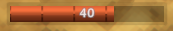
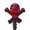
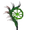
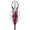
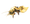

血怒
本站支持中英文站内搜索。带 ↗ 的链接指向外部网站；各页来源版本见页脚。


机制
装备饰品后，玩家的行为会产生血怒。卸下饰品不会清空，只会停止产生。上限由所装备饰品决定。
短暂没有增加后，血怒会缓慢下降。
- 延迟从10秒到6秒不等，血怒条越满，延迟越短。
- 下降速度从每秒-1到-4不等，条越满，消耗越快。
达到上限时，消耗全部血怒并激活饰品能力。之后可立即重新积累，即使饰品能力仍生效。
来源
常规
血怒来自多种来源：
- 激活一个 遗弃者能力: +10
- 格挡:
- 闪避 攻击: +5
- 失衡效果 攻击:+3
- 同一击可以同时杀死并使生物失衡。虽然不播放失衡动画，仍会获得血怒。
- 在生物失衡动画期间命中，可再次填满失衡条，并再次获得血怒。
- 激活青焰龙王放逐之力：所有来源的血怒+100%。
武器
攻击命中时，按武器类别获得血怒，不取决于伤害。同一攻击可触发多次命中：
| 武器 类别 | 主要攻击 | 次要攻击 |
|---|---|---|
| 斧 单手, 双持 | +1 | +1 |
| 斧 双手 | +2 | +1 |
| 弓 | +2 | |
| 棍棒 单手 | +1 | +3 |
| 棍棒 双手 | +2* | |
| 弩 | +2 | |
| 拳类 | +1 | +1 |
| 刀 | +1 | +2 |
| 镐 | +1 | |
| 长柄武器 | +2 | +1 |
| 矛 | +1 | +1 |
| 剑 单手 | +1 | +3 |
| 剑 双手 | +2 | +1 |
*双手棍棒的范围攻击命中时，只获得一次血怒。
炸弹的主投射物直接命中时，血怒+2。
魔法武器
魔法武器获得的血怒取决于具体武器：

巨魔之杖：使用时+12- 招魂之杖：使用时+10
- 佑护之杖：使用时+6
- 雷霆之杖：使用时+5
- 余烬之杖：使用时+3

野生之杖：使用时+3
破碎之杖：使用时+3- 冰霜之杖: +1击打时
说明
- 召唤的枯骨傀儡或树根（狂野法杖）攻击时，不会产生血怒。
- 毒素、火焰和精神等持续伤害，每次结算不产生血怒。
- 连锁闪电命中不产生血怒，但使生物失衡时可以获得。

近战命中邪蛛幼雏或使其失衡时，只获得正常值10%的血怒。
图片库
-
血怒衰减延迟
-
血怒衰减速率


| 攻略 | |
|---|---|
| 玩家 | |
| 战斗 | |
| 生成 | |
| 建材 | |
| 界面 | |
| 世界 | |
| 杂项 | |
| 开发 | |
Adrenaline is a personal resource used by Trinkets. It is represented by an orange bar in the HUD.
Mechanics
Adrenaline is generated by player actions when the player has a trinket equipped. Unequipping a trinket does not reset adrenaline, only its generation is stopped. The maximum amount of adrenaline is defined by the equipped trinket.
Adrenaline slowly decreases after a short delay without any increase.
- The delay varies from 10 to 6 seconds, shortening as the adrenaline bar fills up.
- The decrease rate varies from -1 to -4 per second, depleting faster the more the adrenaline bar is filled.
When the maximum amount of adrenaline is reached, all the adrenaline is consumed and the trinket power is activated. Adrenaline can build up again without delay, even while the trinket power is active.
Sources
General
Adrenaline comes from various sources:
- Activating a Forsaken power: +10
- Blocking:
- Block with weapons or tower shields: +2
- Block with One-handed Shields, Serpent Scale Shield or Bows: +1
- Parry: +5
- Dodging an attack: +5
- Staggering with attacks: +3
- A creature can be staggered by the same attack that kills it. This does not play the stagger animation, but still grants adrenaline.
- Hitting a creature during its stagger animation can refill its stagger bar and grant adrenaline again.
- Active Fader Forsaken power: +100% adrenaline from all sources.
Weapons
Attacks give adrenaline on hit depending on the weapon class, regardless of the damage. The same attack can trigger multiple hits:
| Weapons class | Primary attack | Secondary attack |
|---|---|---|
| Axes One-handed, Dual wielded | +1 | +1 |
| Axes Two-handed | +2 | +1 |
| Bows | +2 | |
| Clubs One-handed | +1 | +3 |
| Clubs Two-handed | +2* | |
| Crossbows | +2 | |
| Fists | +1 | +1 |
| Knives | +1 | +2 |
| Pickaxes | +1 | |
| Polearms | +2 | +1 |
| Spears | +1 | +1 |
| Swords One-handed | +1 | +3 |
| Swords Two-handed | +2 | +1 |
* Two-handed Clubs attacks gives adrenaline only once, if the Aoe hits.
Bombs give +2 adrenaline if the main projectile directly hits.
Magic weapons
Magic weapons give different amounts of adrenaline depending on the weapon itself:
- Trollstav: +12 on use
- Dead Raiser: +10 on use
- Staff of Protection: +6 on use
- Dundr: +5 on use
- Staff of Embers: +3 on use
- Staff of the Wild: +3 on use
- Staff of Fracturing: +3 on use
- Staff of Frost: +1 on hit
Notes
- Summoned Skelett or Root (Staff of the Wild) do not give any adrenaline when attacking.
- Damage over time, (poison, fire, and spirit) do not give adrenaline on tick.
- Chain lightning does not give adrenaline on hit, but can give adrenaline if it staggers a creature.
- Seeker Broods give only 10% of the adrenaline when hit with a melee attack or staggered.
Gallery
-
Adrenaline drain delay
-
Adrenaline drain rate
| Guides | |
|---|---|
| Player | Player • Health • Stamina • Eitr • Adrenaline • Death • Forsaken power • Skills • Status effects • Movement speed • Magic • Fishing • Riding • Sleeping • Emotes |
| Combat | |
| Spawning | |
| Building | |
| UI | |
| World | |
| Misc | |
| Development | |